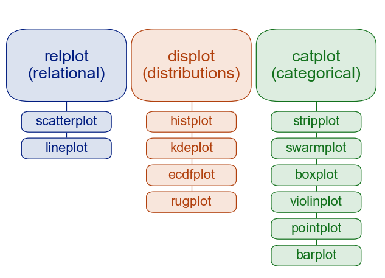
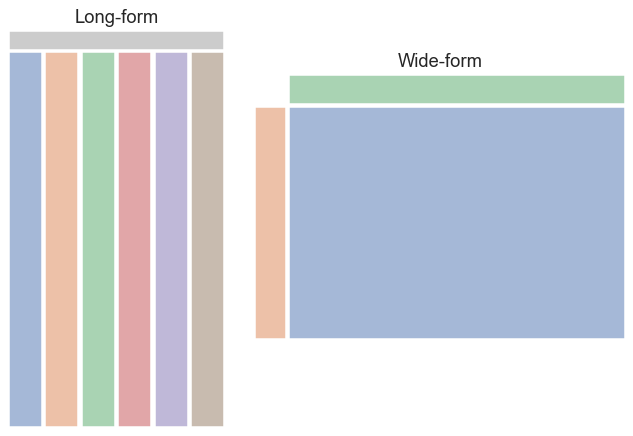
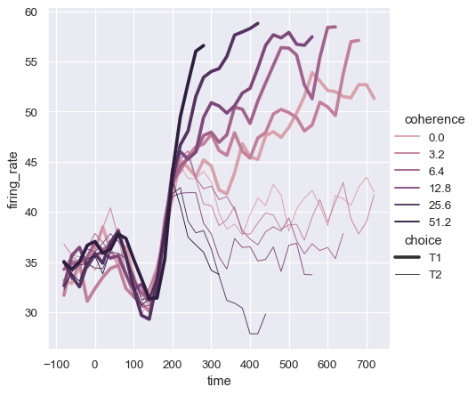
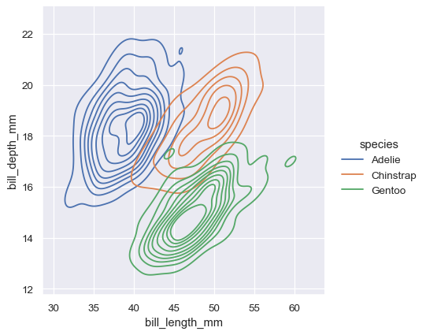
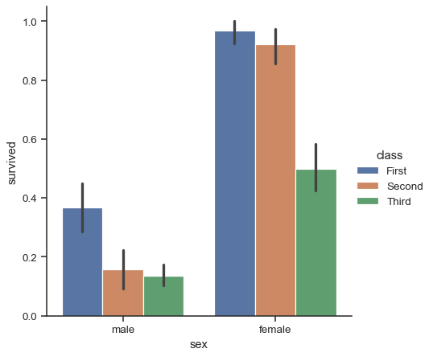
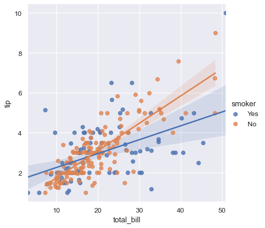
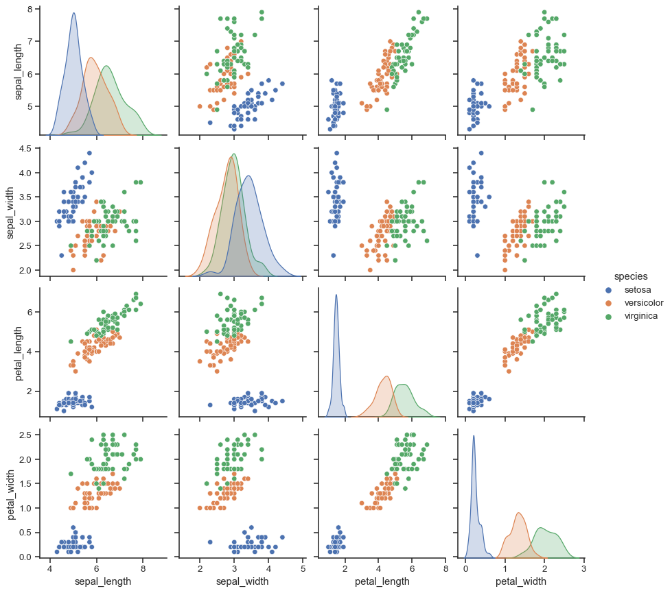
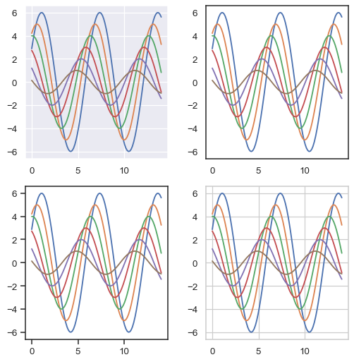
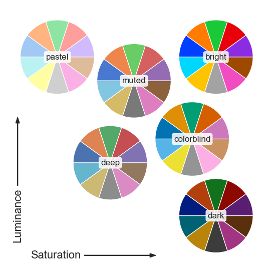

0.11.1
Introduction
Installing
Tutorial
Gallery
API
User guide and tutorial
¶
API overview

Overview of seaborn plotting functions
Similar functions for similar tasks
Figure-level vs. axes-level functions
Combining multiple views on the data

Data structures accepted by seaborn
Long-form vs. wide-form data
Options for visualizing long-form data
Options for visualizing wide-form data
Plotting functions

Visualizing statistical relationships
Relating variables with scatter plots
Emphasizing continuity with line plots
Showing multiple relationships with facets

Visualizing distributions of data
Plotting univariate histograms
Kernel density estimation
Empirical cumulative distributions
Visualizing bivariate distributions
Distribution visualization in other settings

Plotting with categorical data
Categorical scatterplots
Distributions of observations within categories
Statistical estimation within categories
Plotting “wide-form” data
Showing multiple relationships with facets

Visualizing regression models
Functions to draw linear regression models
Fitting different kinds of models
Conditioning on other variables
Controlling the size and shape of the plot
Plotting a regression in other contexts
Multi-plot grids

Building structured multi-plot grids
Conditional small multiples
Using custom functions
Plotting pairwise data relationships
Plot aesthetics

Controlling figure aesthetics
Seaborn figure styles
Removing axes spines
Temporarily setting figure style
Overriding elements of the seaborn styles
Scaling plot elements

Choosing color palettes
General principles for using color in plots
Tools for choosing color palettes
Qualitative color palettes
Sequential color palettes
Diverging color palettes